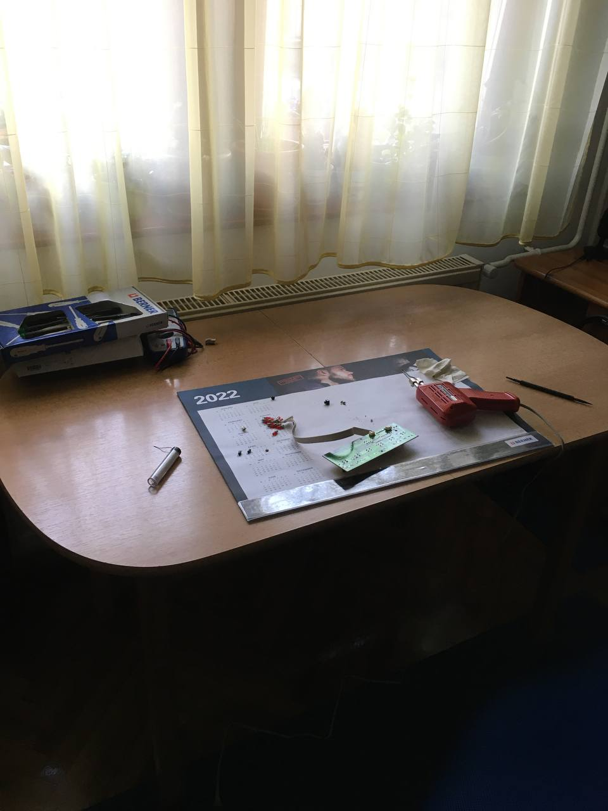
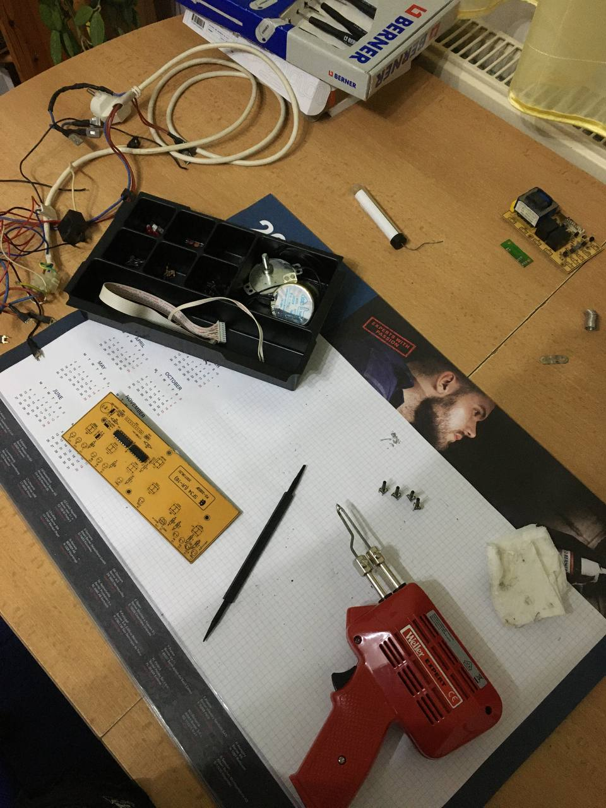

The Start of Something New
While everyone was still hangover from New Year's Eve, I for myself had other plans for the day. Not knowing what has awaited me, I went about my day the same way as I usually do.
Took a shower, got dressed, had breakfast, brushed my teeth (normally one or more of these are neglected because we have more important matters to take care of).
And just when I was ready to tackle another programming project, I noticed my neighbor throwing out a mobile air-conditioning unit. It just stood there, all by itself, in the cold... I almost pitied the darn thing!
So I did what every sane individual would do. I got my coat on, ringed my neighbor to make sure they are indeed throwing it out, and asked them if I could have it. Why? Because I wanted to experiment a bit!
The hauling didn't take too long, and I dashed out to my dad's workshop to fetch some tools needed for the job: Screwdrivers, pliers, something to hold the nuts and screws, a plastic box.
Disassembling went smoothly, there was nothing risky about it either (unlike some other scrapping I've done in the future). I asked my dad if he could lend me some storage boxes to store the individual components separately in an orderly manner, which have been sorted afterward.
Although you may fail to see the importance of this, I can assure you that by tearing down my first machine to find out what's inside is the great sign of curiosity which has led me down the road of what was ahead of me.
The problems encountered were entirely different than in programming. I had to physically put work into finishing the task, I had to have a good workflow if I didn't want to spend hours on end, and I also had to figure out what parts I am looking at.
I had no special tools to do the desoldering with, and I also had no idea what I was doing. Still, I managed to salvage some pushbuttons, a few LEDs, some capacitors, resistors (for god knows why!).